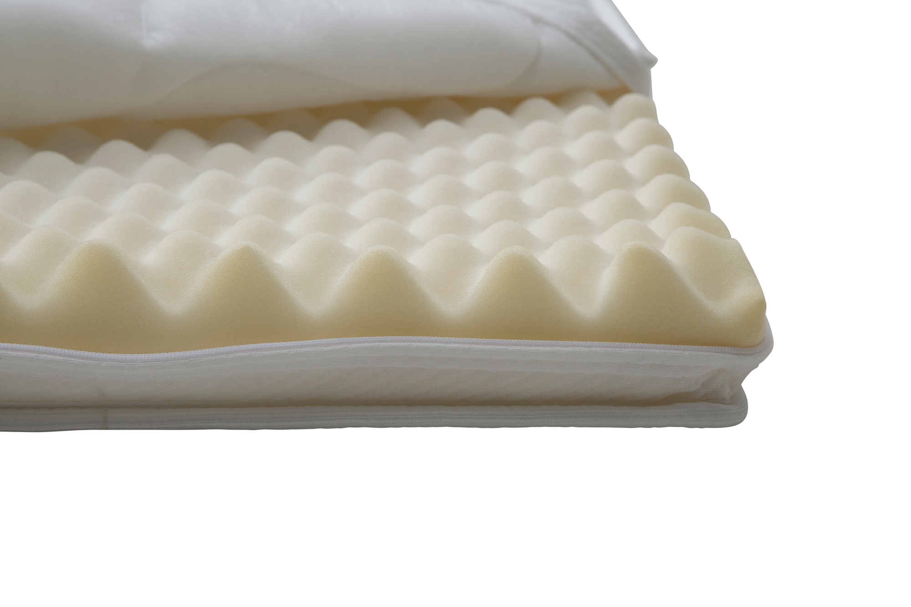
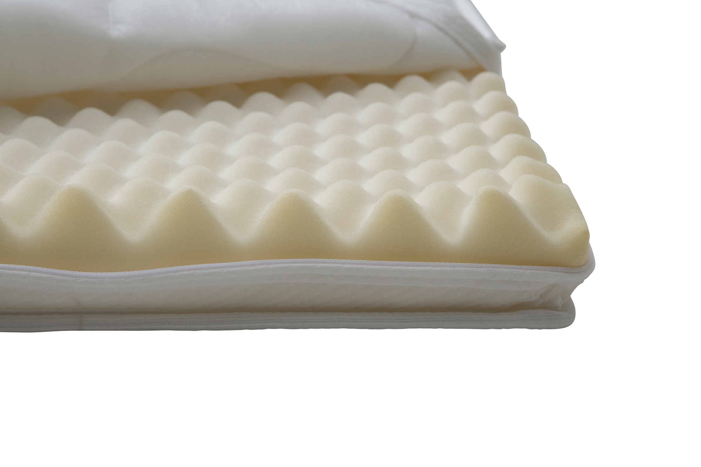

Moon Silver Standard mattress topper 105x200x5cm
197758

 

Description
The Moon Silver Standard mattress topper, measuring 105x200x5 cm, offers a comfortable and breathable foam layer that enhances your mattress's comfort. This light gray topper belongs to the Silver tier of the Moon series, balancing quality and affordability within the NEST & LIVING collection. Its 5 cm thickness provides optimal support and cushioning for a restful night's sleep, while the breathable foam material promotes air circulation to maintain a fresh sleeping environment.
Technical specifications
| Size | 105 × 200 cm |
|---|---|
| Thickness | 5 cm |
| Tier | Silver |
| Color | Light gray |
| Material | High-quality foam |